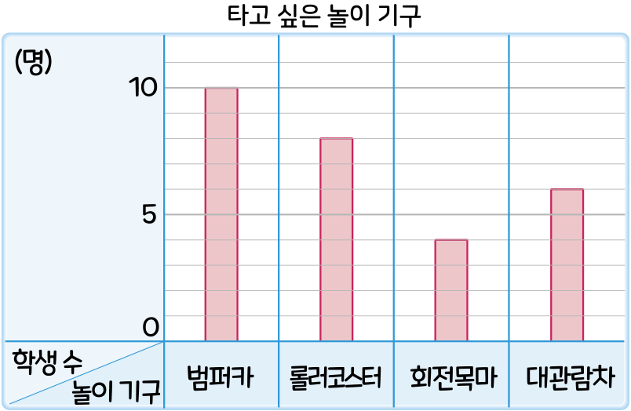

5. 자료와 막대그래프
막대그래프를 알아볼까요
수학
112~113
쪽
수학 익힘
76
쪽
[
~
]
우주네 반 학생들이 놀이공원에서 타고 싶은 놀이 기구를 조사하여 나타낸 막대그래프입니다. 물음에 답해 보세요.

막대그래프의 가로와 세로는 각각 무엇을 나타내나요?
가로:
, 세로:
막대를 세로로 나타낸 막대그래프에서 가로는 조사 항목을 나타내고 세로는 조사한 수를 나타냅니다.